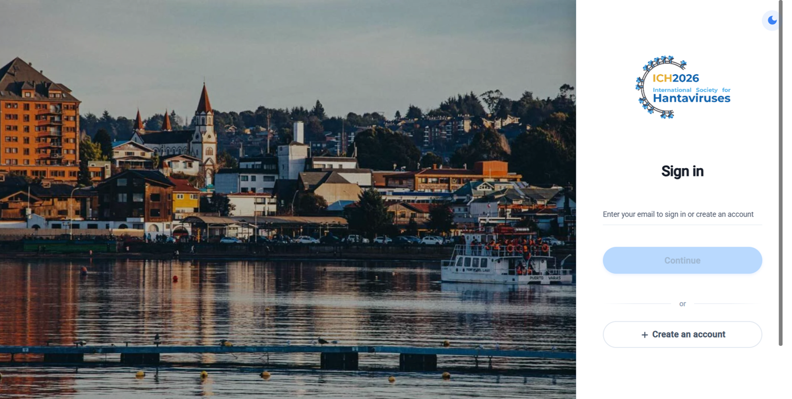

Registration support for researchers based in South America.
A limited number of fellowships are available to reduce or cover registration costs for participants based in South America.
ICH2026 Registration & Abstract Submission
Submit abstracts and complete registration through the official 4ID portal.
Deadlines
Use the 4ID portal to submit abstracts and complete registration for ICH2026.
Final abstract submission deadline: August 16, 2026.
Oral presentations will be selected from submitted abstracts.
Early-bird registration deadline: September 1, 2026.
Abstracts should be 250 words maximum, excluding title, authors, and affiliations.

Funding & recognition
Applications and nominations are now open for ICH2026.
A limited number of fellowships are available to reduce or cover registration costs for participants based in South America.
Nominations are open for the two lectureship awards presented at each triennial meeting.
Registration fees
Fees are listed in Chilean pesos (CLP). USD amounts are approximate.
The ICH2026 registration fee includes the Opening Reception on November 1, lunches on November 2 and 4, coffee breaks, and the Gala Dinner on November 4. For participants attending the Andes Virus Workshop on November 5, lunch and coffee breaks are also included.
| Category | Early bird Chilean Pesos | USD approx. | Late Chilean Pesos | USD approx. |
|---|---|---|---|---|
| Undergraduate Students | $240,000 | US$276 | $275,000 | US$316 |
| Graduate Students | $280,000 | US$322 | $350,000 | US$402 |
| Postdocs & Research Assistants | $320,000 | US$368 | $390,000 | US$448 |
| Standard Research Professors, Physicians, Others | $380,000 | US$437 | $450,000 | US$517 |
ANDV Workshop registration
Registration is open. Participants may attend the ANDV Workshop without registering for ICH2026, or add the workshop to their conference registration.